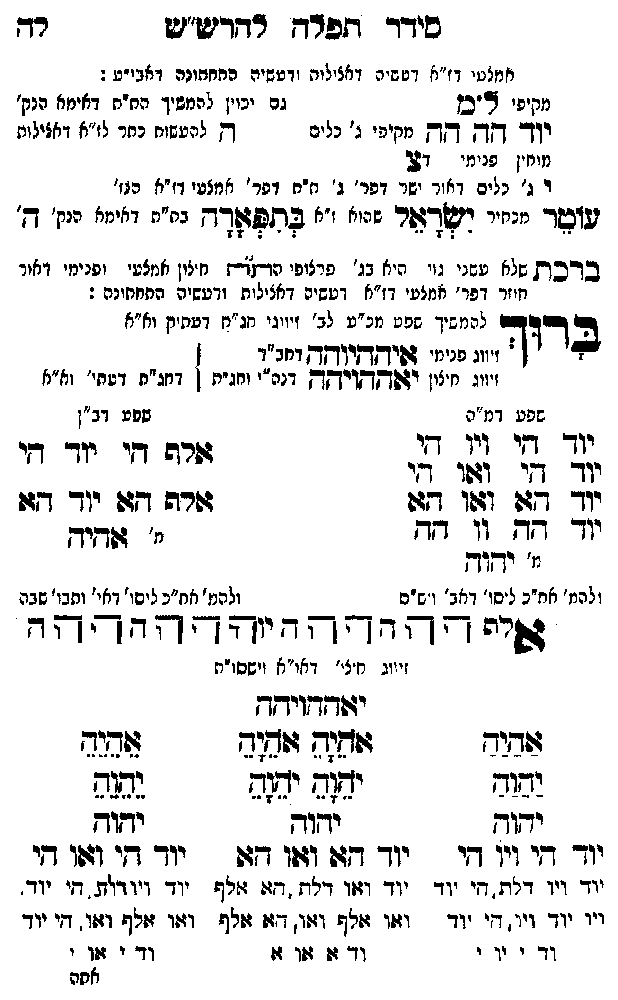

Neue Klartextfassung
[מקיפי ל"ם] יוד הה הה [מקיפי ג' כלים] [מוחין פנימי דצ'] צ י ג' [ג' כלים דאור ישר דפר' ג' ת"ת דפר' אמצעי דז"א הנז'] [גם יכוין להמשיך הת"ת דאימא הנק' ה להעשות כתר לז"א דכללות:] עוטר [מכתיר] ישראל [שהוא ז"א] בתפארה [ת"ת דאימא הנק' ה']: ■ ברכת שלא עשני גוי ■ [היא בג' פרצופי הת"ת חיצון אמצעי ופנימי דאור חוזר דפר' אמצעי דז"א דעשיה דכללות ורביעיה התחתונה:] ברוך [להמשיך שפע מכ"ע לב' זיווגי חג"ת דעתיק וא"א] [זיווג פנימי איההיוהה דחב"ד] [זיווג חיצון יאההויהה דכ"ח ותו"ח] [דחג"ת דעתי' וא"א] === טבלה === [טור ימין — שפע דמ"ה] יוד הי ויו הי יוד הי ואו הי יוד הא ואו הא יוד הה וו הה [מ' יהוה] [ולכת' חב"ד ליסוד דאבא ויש"ס] [טור שמאל — שפע דב"ן] אלף הי יוד הי אלף הא יוד הא [מ' אהיה] [ולכת' חב"ד ליסוד דאי' ותבו' שבה] === סוף טבלה === אלף ה הה ו וה יה יהוה הההה [זיווג חיצו' דאו"א וישסו"ת] יאההויהה === טבלה === [טור ימין] אַהַיַהַ יַהַוַהַ יהוה יוד הי ויו הי יוד ויו דלת, הי יוד ויו יוד ויו, הי יוד וד י וי י [טור אמצעי] אָהָיָהָ אָהָיָהָ יָהָוָהָ יָהָוָהָ יהוה יוד הא ואו הא יוד ואו דלת, הא אלף ואו אלף ואו, הא אלף וד א או א [טור שמאל] אֵהֵיֵהֵ יֵהֵוֵהֵ יהוה יוד הי ואו הי יוד ויו דלת, הי יוד ואו אלף ואו, הי יוד וד י או י === סוף טבלה ===
Original gegen neue OCR · Niqqud für Vergleich ausgeblendet
Original
[מקיפי ל"ם] יוד הה הה [מקיפיK074-001 ג' כלים] [מוחיןK074-002 פנימי דצ'] צ יK074-003 ג' [ג'K074-004 כלים דאור ישר דפר' ג' ת"תK074-005 דפר' אמצעיK074-006 דז"א הנז'] [גם יכוין להמשיך הת"תK074-007 דאימא הנק' ה להעשות כתר לז"א דכללות:] עוטר [מכתיר] ישראל [שהוא ז"א] בתפארה [ת"ת דאימא הנק' ה']: ■ ברכתK074-008 שלא עשני גוי ■ [היא בג' פרצופי הת"ת חיצוןK074-009 אמצעי ופנימי דאורK074-010 חוזר דפר' אמצעי דז"א דעשיה דכללות ורביעיה התחתונה:] ברוך [להמשיך שפע מכ"עK074-011 לב' זיווגי חג"תK074-012 דעתיק וא"א] [זיווגK074-013 פנימי איההיוהה דחב"ד] [זיווגK074-014 חיצון יאההויהה דכ"ח ותו"ח] [דחג"ת דעתי' וא"א] === טבלה === [טור ימין —K074-015 שפע דמ"ה]K074-016 יוד הי ויו הי יוד הי ואו הי יוד הא ואו הא יוד הה וו הה [מ' יהוה] [ולכת' חב"ד ליסוד דאבא ויש"ס] [טור שמאל — שפע דב"ן] אלף הי יוד הי אלף הא יוד הא [מ' אהיה] [ולכת' חב"ד ליסודK074-017 דאי' ותבו' שבה] === סוף טבלה === אלף ה הה ו וה יה יהוה הההה [זיווגK074-018 חיצו' דאו"א וישסו"ת] יאההויהה === טבלה === [טור ימין] אהיה יהוה יהוהK074-019 יוד היK074-020 ויו היK074-021 יוד ויו דלת, היK074-022 יוד ויו ∅K074-023 יוד ויו, היK074-024 יוד וד י ויK074-025 י [טור אמצעי] אהיה אהיה יהוה יהוה יהוה יוד הא ואו הא יוד ואו דלת, הא אלף ואו אלף ואו, הא אלףK074-026 וד א או א [טור שמאל] אהיה יהוה יהוה יוד הי ואו הי יוד ויו דלת, הי יוד ואו אלף ואו, הי יודK074-027 וד י אוK074-028 י === סוף טבלה ===K074-029
OCR · fehlbar
כידד תפרח רדריש"שט רד אמצטי דז"א דט שיה דאצילות ודטשיה התחתונה דאבי"ט : מקיפי "כן גם יכוין להמשיך החית דאימא הנק' ודך- קך קך מקיפיK074-001 ג' כלים דק לידעשות כחר לז"א דאצילות מוחיןK074-002 פנימי 27 וK074-003 ג' ∅K074-004 כלים דאור ישר דפר' ג' ח"חK074-005 דפר' אמצטיK074-006 דז"א הגז' דועד ינייר ריפדצור שיי' "' לתפאדד בח"חK074-007 דאימא הנק' דק' בדכתK074-008 שלא טשני גיי ניא בנ' פרציפי נודדת חיוןK074-009 אמצעי ופנימי ואורK074-010 חוזר דפר' אמצעי דז"א דטשיה דאצילות ודעשיה החחחונה : ברד(כם להמשיך שפט מנ"עK074-011 לב' זיווגי חג"נזK074-012 דעתיק וא"א בדוד.K074-013 פנימי דפיחקי"ךקךן דחב"ד זיווגK074-014 חיצון וזפץדאורקךקךק דנה"י וחג"ח ן דחג"ת דטתי' וא"אK074-015 שפע דמ"ה שפע דב"ן יוךך דץי די ד די (2. 7 שרה דיK074-016 יוד די יך די' זזוו די יוך -127 141 ד[ דשרד גד יו- -דו ווךך ז 11 גזא מ' עדיך י' ידוך להמ' אח"כ ליסו' דאב' (יש"ס ולהמ' אח"כ ליסו'K074-017 דאי' ותבו' שבה ש"י "יד - יד" ד"ץ [- ץ' זיווגK074-018 חיצו' דאו"א וישסוית ידודגדוידדז צשלש לללללל4 שגצד ישוש יש(ש יה( גשגש ידוד ידוד יחודK074-019 יוד דיK074-020 ויו זי יוד -ז: וזו דצו יוד די וגו דיK074-021 יוד ויו דלת. די יוד יוד וזיו דלת דזו זולף יוד ויודזוז. די יוד. ויוK074-022 יוד ויו דיK074-023 יוד וז:ו זולף ולו. גז גלןז וצו זלף וזזו. דיK074-024 יוד וד י יוK074-025 י ∅K074-026 וד זז זזו זוK074-027 וד י ז:וK074-028 י אחהK074-029